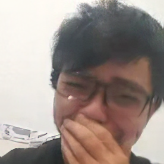

디스코드 서버가 있나요?
네. 이곳 클릭해서 들어오세요.
당신들은 누군가요?
소개합니다 페이지를 확인해주세요!
이 토너먼트의 규칙은 무엇인가요?
규칙 문서 를 확인하세요.
이 대회의 목적은 무엇인가요?
우리는 동부의 플레이어를 기반으로, 목표로 하는 높은 생산 가치 토너먼트를 만드려고 노력하고 있습니다.
(우리의 실행 시간에서 알 수 있듯이.) "동부 테트리스 토너먼트" 라는 전제는 현 시점에서 오래된 뉴스지만,
우리는 더 많은 사랑을 주어야 한다고 생각했습니다. 대부분이 서부에 기반을 두고 있다는 점을 감안할 때, 다른 조직이 너무 잘 지원할 수 있는 것은 아닙니다.
어떤 것이 VTT를 열린 혜성 으로 만들었나요?
우리는 우리를 테트리스 토너먼트 세계 지도에 올려놓는 무언가 큰 것을 시도하고 만들 수 있는 적절한 재능과 적절한 인맥을 가지고 있었습니다.
그래서 우리는 그렇게 했습니다. 왜냐하면 단순하지 않을 이유가 없었기 때문입니다. 게다가 Renge는 우리에게 그렇게 말했습니다.
이걸 준비하는데 얼마나 걸리셨나요?
아주 긴 두 달.
이걸 준비하는데 비용이 얼마나 드셨나요?
우리의 정신을 희생시키면서 한푼도 아닙니다. 오 예, 한푼도 비용이 들지 않는 것에 대해 말하면, 이 글을 쓰는 시점에서 우리는 실제로 누적 상금에 한푼도 없습니다.
기부? 제발? 기부금의 100%는 우승자에게 돌아가며 우리의 펀드 매니저는 평판이 좋은 Renge입니다.
왜 “열린 혜성” 인가요?
테마는 "별이 빛나는 밤"으로 시작했지만 여러 가지 이유로 인해 어딘가에서 혜성으로 변경되었습니다(그 중 하나는 특정 파란 머리 사이코패스 우상을 탐닉하는 것과 관련이 있을 수도 있고 아닐 수도 있음).
이 웹사이트에 숨겨진 요소(이스터에그)가 있나요?
우리의 메인페이지를 새로고침하고, 혜성을 10번 클릭하는 것.